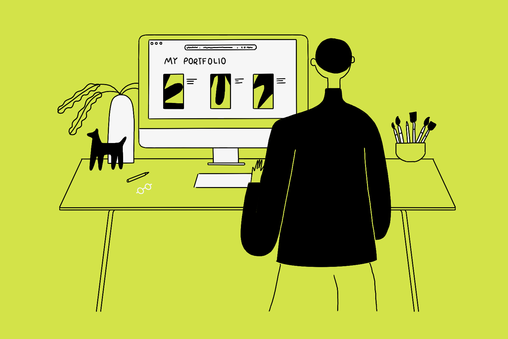

How Does Hardware Work?

In this team project for the Principles of Information Systems course, we constructed and tested basic digital logic gates (NOT, AND, and OR) using transistors, resistors, LEDs, and a breadboard. This project helped me understand how logical operations are implemented at the hardware level and how electronic components work together to perform basic computations.
demo
Hour of Code (Hour of AI)

In this team project for the Principles of Information Systems course, we organized and conducted an Hour of Code (Hour of AI) event for a local community. We introduced participants to basic programming concepts and algorithms using interactive tools and activities. This project helped me develop teamwork, communication skills, and the ability to explain technical concepts in a simple and engaging way.
demo
Personal Portfolio Website

In this individual project for the Principles of Information Systems course, I designed and developed a personal portfolio website using HTML and CSS with the support of GenAI tools. The project involved using Git and GitHub for version control, organizing a clean repository structure, and hosting the website on GitHub Pages. This project helped me gain practical experience in web development and version control.
demo /
code